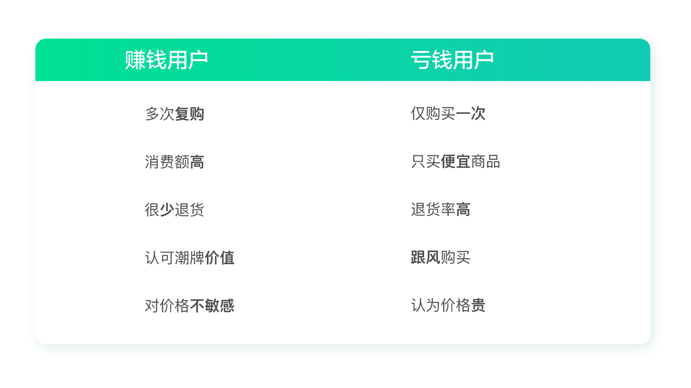
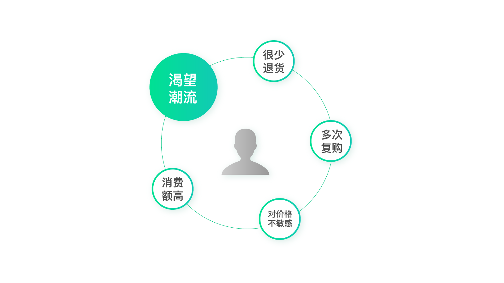
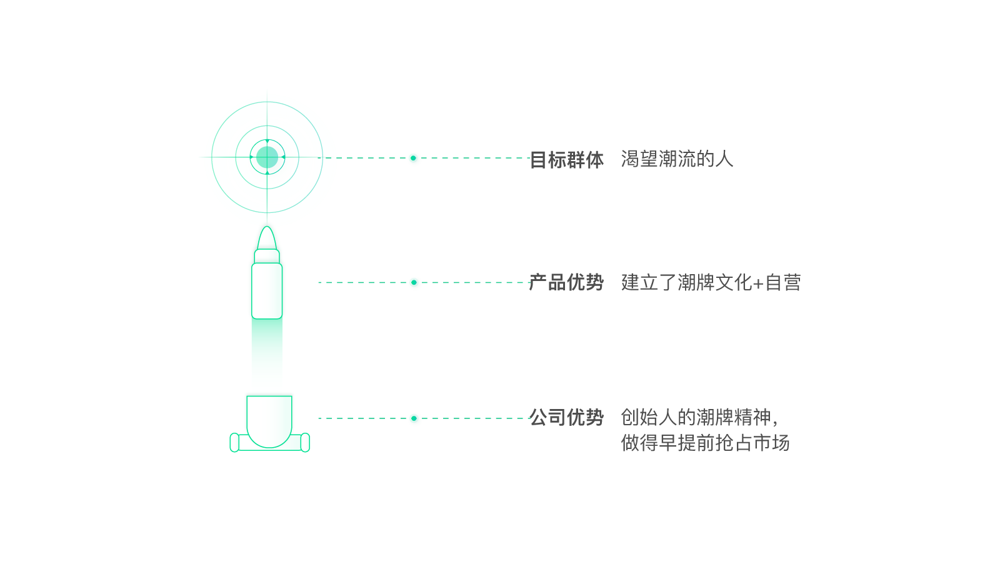
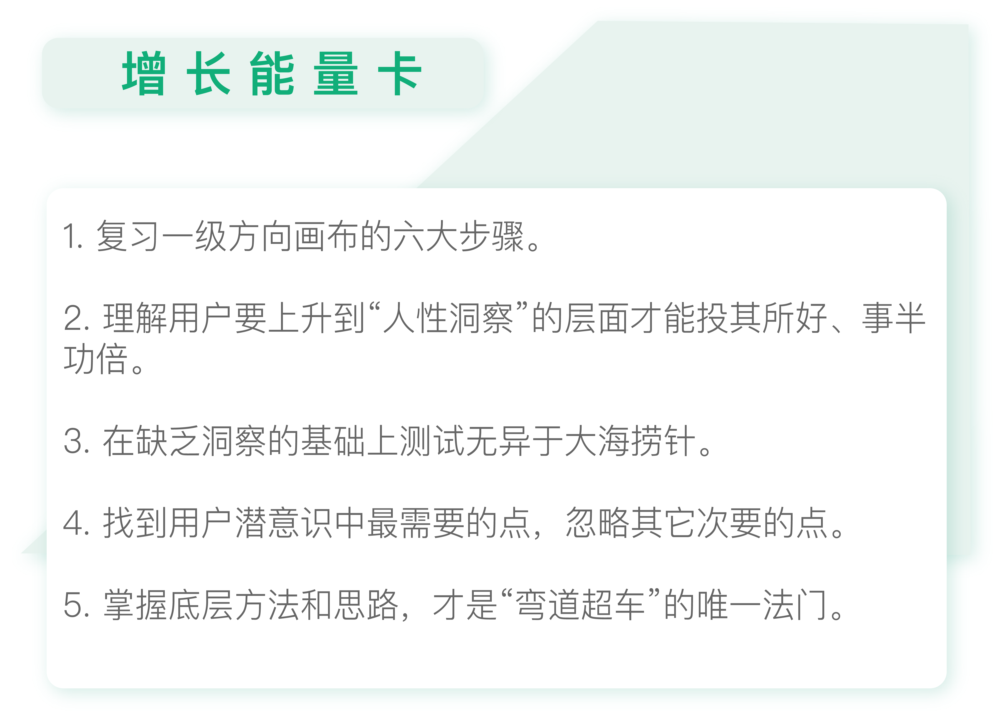

- 00 开篇词 人人都是增长官.md.html
- 01 预习 增长小白如何“弯道超车”？.md.html
- 02 预习 如何理解“增长”？.md.html
- 03 预习 不同职能如何做好增长？.md.html
- 04 预习 做增长如何处理职能间的矛盾？.md.html
- 05 正确目标找不对，天天加班也枉然.md.html
- 06 活学活用北极星指标.md.html
- 07 OKR如何助力增长？.md.html
- 08 不懂用户调研？那就对了！.md.html
- 09 调研目标：在差异性洞察中找到爆破点.md.html
- 10 数据分析：在“花式对比”中发现玄机.md.html
- 11 用户分类：围绕北极星指标细分人群.md.html
- 12 用户访谈：像侦探一样寻找破案线索（上）.md.html
- 13 用户访谈：像侦探一样寻找破案线索（下）.md.html
- 14 提炼用户差异，发现增长契机.md.html
- 15 挖掘产品优势，打破增长瓶颈.md.html
- 16 定位营销差异，抢占用户心智.md.html
- 17 一级方向：找到增长爆破点.md.html
- 18 B端产品如何调研？.md.html
- 19 全局规划增长机会.md.html
- 20 统筹全局的用户增长地图.md.html
- 21 案例解析：定义关键增长指标.md.html
- 22 正负双向洞察，找准切入点.md.html
- 23 二级机会：制定增长策略.md.html
- 24 为一家濒临破产的公司制定增长策略（上）.md.html
- 25 为一家濒临破产的公司制定增长策略（中）.md.html
- 26 为一家濒临破产的公司制定增长策略（下）.md.html
- 27 为什么指标数据怎么优化都不提升？.md.html
- 28 案例解析：打造增长闭环（上）.md.html
- 29 案例解析：打造增长闭环（下）.md.html
- 30 案例解析：唤醒沉睡用户（上）.md.html
- 31 案例解析：唤醒沉睡用户（下）.md.html
- 32 没有分解，就无缘增长.md.html
- 33 四个要点颠覆传统需求文档.md.html
- 34 三级落地：无限场景应用.md.html
- 35 手把手教你设计一次成功的实验（上）.md.html
- 36 手把手教你设计一次成功的实验（下）.md.html
- 37 积少可成多，别针换别墅.md.html
- 38 四级延续：增长组件库案例.md.html
- 39 以用户为中心增长.md.html
- 增长导航图 增长专栏的知识架构是怎样的？.md.html
- 尾声 结束意味着新的开始.md.html
- 预习答疑 你需要一张思维导图吗？.md.html
- 捐赠
25 为一家濒临破产的公司制定增长策略（中）
你好，我是刘津。
今天我们需要按照一级方向和二级机会的思路，复盘Karmaloop这家公司的增长案例，看看你能否为它制定出合适的增长策略。
回顾一级方向画布
还记得我们的一级方向画布中有几个要点吗？忘记了也没有关系，我们来一起回顾一下它的内容吧。
- 产品目前所处阶段（探索期/成长期/成熟期/新的探索期）；
- 当前阶段的北极星指标；
- 用户范围/分类/优先级（围绕北极星指标）；
- 用户画像（用户差异性洞察，需要数据支撑）；
- 定位（三级大炮）；
- 一级方向（围绕定位最高级的事项）。
分析一级增长方向
现在，我们尝试用一级方向画布来分析Karmaloop的增长案例。
1.产品目前所处阶段
第一步，是产品目前所处的阶段。
很明显，Karmaloop这家公司的经营方向是潮牌电商，这个方向已经经过了市场的验证，并且曾经为它带来了可观的营收，后来只是因为经营不善才倒闭的。所以，这家公司的方向是非常明确的。因此，它可以算作是处在成长期。
2.当前阶段的北极星指标
第二步，当前阶段的北极星指标。当然，案例里Karmaloop的“当前”已经是过去时了，不过为了方便讲解，我们还是这样称呼吧。
通过第一步，我们知道了该产品处于成长期。而产品在成长期一般追求高速增长，结合Karmaloop当时资不抵债的实际情况，关注点在于把量做大的同时还要盈利，让这家公司起死回生。
所以，“用户量增长且盈利”是该产品当前阶段的北极星指标。
3.用户范围/分类/优先级
第三步，是围绕北极星指标划分用户范围，做好用户的分类和优先级排序。
如果你根据潮牌产品的“小众”特性和之前Karmaloop的经营已经积累了一大批忠实用户的实际情况来思考的话，在用户范围上，你就会很自然地把重点放在唤醒老用户上。当然，也需要适当拉新。
在用户分类上，围绕北极星指标“用户量增长且盈利”，我们可以把用户简单地分为两类，一类是让公司亏钱的用户，一类是让公司赚钱的用户。没错，不是所有的用户都让公司赚钱的，当时有很多用户都在让Karmaloop亏钱。
由于该公司有近10年的交易数据，所以通过RFM（最近一次交易时间、交易次数、交易金额）模型很容易建立用户价值分层。再结合各项成本，计算出满足什么条件的用户在为公司赚钱，满足什么条件的用户在让公司亏钱。结合性别、年龄、地域等信息，对满足条件的用户进行访谈，再定量验证，得到用户分类及典型特征对比。
你可以在图片中看到，让Karmaloop赚钱和亏钱的用户分别有什么特征。

通过对比，你可以明显地看出来：目前的赚钱用户是发自内心的喜欢潮牌，愿意为了潮牌多花钱，而且会经常穿；而亏钱用户就只是抱着尝试的心态，发现不合适自己也就不再购买了。
看到这儿，你可能会觉得肯定是赚钱的用户是我们的目标。
其实不一定。围绕北极星指标“用户量增长且盈利”，我们需要从两方面考虑：一，是谁的量更大；二，是谁的利润高（由于之前对所有人的优惠策略一致，所以这里粗略的看消费金额就可以了）。
通过数据分析，发现赚钱用户只占1.3%的访问量，很明显这个量实在是太小了。但是，他们在访问量只占1.3%的情况下，贡献了43%的收入。这个对比是不是很惊人？但是，由于这部分人太少，他们的贡献收入也没有过半，所以我们还是需要考虑到更大的那部分“亏钱用户”。
亏钱用户的数量是有了，但是这部分人群体量越大赔的就越多，如何才能两全其美呢？办法只有一个，那就是尽量把他们变成赚钱的用户。可是，对潮牌根本不感兴趣的用户，能转变成赚钱的用户吗？
在第1讲和第13讲里我都提到过，理解用户要上升到“人性洞察”的层面，挖掘到用户的潜在需求。
很多用户确实是抱着试试看的想法购买，买回来觉得不满意就不再买了。但是，这里面可能包含了各种因素，比如刚好买到了一件不合适的衣服，刚好号码不合适，刚好购物体验不好，刚好没有得到闺蜜的夸奖……如果你能投其所好，适当地挽回，有可能他就会变成你未来的忠实粉丝。
“访谈”就是用来解决这个问题的。你可以针对这部分人群做深入的访谈，看看他们放弃的原因是什么。如果能找到答案，说不定你只需要付出很小的努力就可以挽回大量的用户。
从案例里，你应该已经看到了，德鲁更多的是用测试的方式。比如，为了唤醒流失老用户，他把流失的老用户划分成许多个10000人的小组，逐步测试不同的方案。
- 10-30%范围内的折扣；
- 下次购买返现金；
- 送礼品卡；
- CEO亲笔信及电话
- ……
经过不懈的努力，在经历过20多次失败的测试后，德鲁才找到了一套最佳组合。
这里不是说测试不好，而是想指出：在缺乏洞察的基础上测试，真的无异于大海捞针。这样虽然也有可能成功，但无疑是非常低效的。你我都不是德鲁，可能连试错的机会都不会有他那么多。在没有那么多机会可以去试验的情况下，一开始就找好方向，对我们来说更为重要。
4.用户画像
第四步，是用户画像。
通过常识来分析：在Karmaloop经营的如此糟糕的情况下，留下的这些“赚钱用户”绝对是真爱粉，他们是实实在在认可潮牌价值的。但是潮牌毕竟是小众文化，如果想把量做起来，就不得不重视大量“跟风”的用户群体。
就拿名牌包来说吧。真正认可它的品牌价值，且符合这个消费档次的人群并不多。它的销量很大程度上是靠普通人撑起来的。
为什么很多收入不高的普通人也会买很贵的包？从人性的角度来说，是为了抬高自己的价值，满足内心的缺失感。看着手里几千块的月薪，却能有朝一日换一个名牌包，这带给人的是一种满足感，好像自己也变成了有钱人。
潮牌也是如此。它与名牌产品一样，是带有符号价值的。穿上潮牌会让人感觉很酷、很潮、很有个性，这是很多大众内心期盼的，而不一定要真正的拥有“潮”的精神。
至于价格，大众一般都会在意价格的。但是如果你的东西能满足某种人性的需要，即使是一个爱讨价还价的人也会变得非常慷慨，就好像我说的名牌包的例子。
这也符合增长的实质，找到用户潜意识中最需要的点，忽略其他次要的点。现在，让我们来看看经过校正的用户画像。

通过这个画像，你可以看到抓住“渴望潮流”这个人性诉求，正是“四两拨千斤”的关键。
5.定位
接下来我们再讨论定位，这是第五步。
这里就要用到我们的营销定位三级大炮了。通过前面的分析，我们已经得出了Karmaloop的公司优势、产品优势和目标群体。

很显然，Karmaloop的公司优势是：创始人的潮牌精神在大众心中根深蒂固，并且做得比较早占领了市场；产品优势是建立了潮牌文化，自营模式能够保证体验；目标群体是认可潮牌价值及渴望潮流的人。
6.一级方向
第六步，就是得出一级方向了。
围绕“用户量增长且盈利”这个北极星指标，我们最重要的方向是什么呢？当然是要突出和强调潮牌定位。尤其是要让人感觉它并不是一个特别小众的文化，只要穿上我们的衣服你也能变成潮流达人。这样才能拉拢那些渴望跟风、仰望潮牌的群体。同时，这样也能够让大家不会太关注价格，提高利润。
分析到这里，一级方向的部分就完成了。接下来你知道要做什么了吗？没错，接下来我们就要围绕一级方向去制定二级增长策略。由于篇幅有限，我们会在下一讲内容中继续。
看到这里，我想你也有所体会。这和增长黑客的思路的确不太一样，增长黑客更倾向于直接进入二级策略部分，通过经验、假设，以及大量的实验得出结论。这种方式的弊端显而易见：缺乏洞察导致实验效率较低；缺乏底层的方法论支撑，假设及经验难以被复用等等。
而我这里讲的思路其实是产品极客和增长黑客思路的结合，非常的偏重前期的洞察和分析，后面还要结合数据实验验证。
我知道很多同学可能非常期待看到具体的、能即学即用的实操案例，而不是太多的理念和分析。但是我想说的是，即学即用、立竿见影的东西是不存在的。掌握底层方法和思路，才是“弯道超车”的唯一法门。

思考题
今天的思考题是，请你试着用一级方向画布去分析其它的增长案例，看看是否能找到人性洞察背后那个最关键的点。
欢迎把你的思考和疑问通过留言分享出来，与我和其他同学一起讨论。如果你觉得有所收获，也欢迎把文章分享给你的朋友。
© 2019 - 2023 Liangliang Lee. Powered by gin and hexo-theme-book.